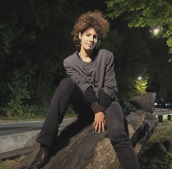

|
|
| HOME | | | | | |
|  |
Haar specialismen zijn economische sociologie, historische sociologie (1980s West-Europa) en politieke wetenschappen. Haar themagebieden zijn werkloosheid, prestatiemaatschappij, psychiatrie, surveillance, autoritarianisme, de risicocultuur en sociale bewegingen. Ze publiceerde bijvoorbeeld in 2012 als tweedejaars- student een paper over antiterrorismebeleid in Nederland en het Verenigd Koninkrijk en werkt momenteel aan twee papers over werkloosheid en subtiel verzet tegen economische ongelijkheid. De belangrijkste inzichten heeft ze niet opgedaan in de boeken of in de colleges in Oxford, hoewel deze natuurlijk de belangrijke fundamenten boden tot nadenken. De belangrijkste inzichten heeft ze opgedaan door de geschiedenis recht voor haar ogen te zien voltrekken: door zich middenin de Amerikaanse anomie te bevinden na de verkiezingen in 2016 en in de collectieve emotie van de vele demonstraties. Door met eigen ogen op misstanden te stuiten die vooral tegenwoordig wel eens gemist worden door de overwerkte academici. Of door gewoon met een local in de late avond door Central Park te wandelen om er vervolgens achter te komen hoe lastig dat eigenlijk is door intimiderende agenten (vanwege de huidskleur van haar metgezel). Karlijn heeft meer segregatie gezien dan dat ze essays moest schrijven in haar hele studie (en dat waren er veel).
Sociologe interviewt psychiater: oude fricties? Over sociologen in het algemeen: sociologen tegenwoordig helemaal niet meer zo aan het katten
op de psychiatrie, sterker nog: misschien wel een beetje té weinig. Ze zijn teveel bezig met kijken wat de American Journal
of Sociology belangrijk vindt en hoeveel meer 'citation scores' hun collega's al wel niet hebben (Karlijn was ook 'n tijdje zo'n vervreemde academica).
De 'kwestie' is totaal niet meer 'hot'i> in de sociologie, want 'de discussies zijn toch allang beslecht dertig jaar geleden'. Maar de recente wetswijzigingen, predictive policing en Big Data,
mediadiscussies en terugdraaien van de ingezette deïnstitutionalisering vragen om 21e eeuwse sociologen die zich erover buigen.
|